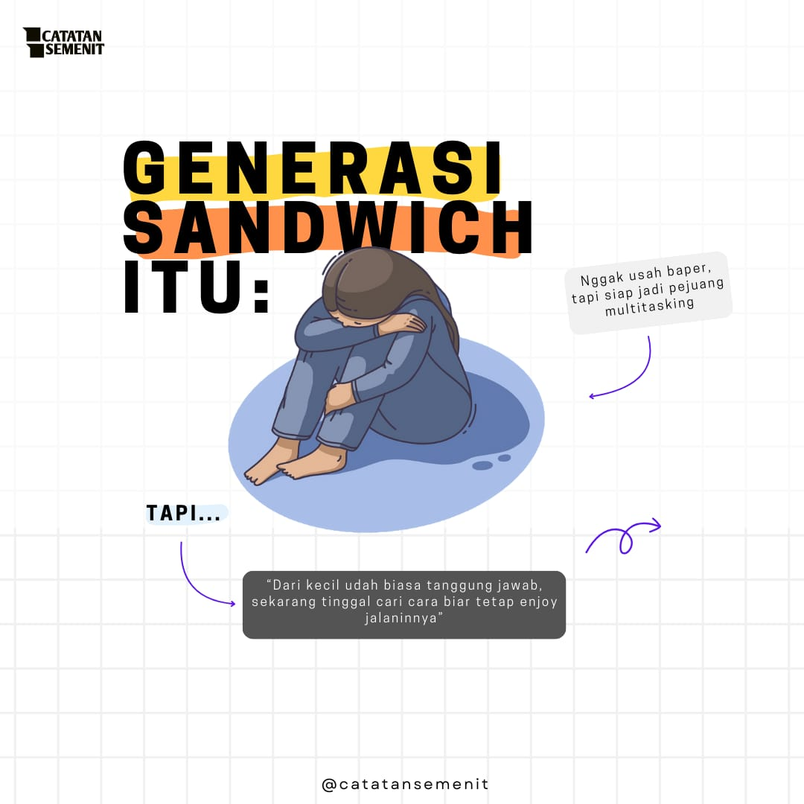

🔥 POSTINGAN TER-HITS 🔥
Konten Wawasan Semenit yang Bikin Kamu Makin Pinter
Scroll bentar, dapet ilmu banyak! Mulai dari tips biar hidup lebih produktif sampai fakta random yang bikin, "Oh gitu, ya!" 😎✨

🔥 POSTINGAN TER-HITS 🔥
Scroll bentar, dapet ilmu banyak! Mulai dari tips biar hidup lebih produktif sampai fakta random yang bikin, "Oh gitu, ya!" 😎✨